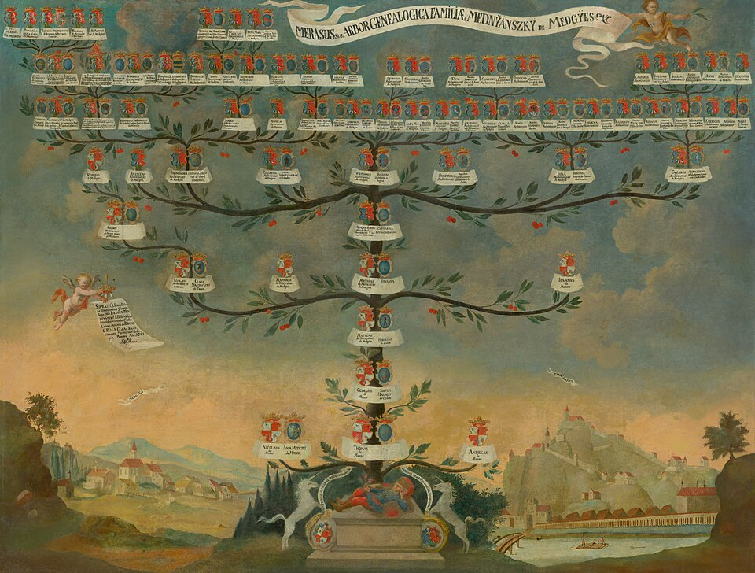

バラカは、まだ広く知られていない作家の絵を実際の大きさのまま見て買えるカタログです。毎月ひとり作家を紹介し、紹介が終わったあとも作品はそのまま販売しています。
← すべての作品にもどる
中村あかり ／ 鎌倉 ／ 2026.09
¥420,000税込
ドア（高さ2,000mm）と並べた図です。上の写真は見やすい大きさにしていますが、こちらが実際の比率です。
2週間お取り置きできます。その間は他所で販売しないよう、作家にお願いします。作品番号をお知らせください。
BK-007 ／ hello@baraka.art ／ 045-000-0000
配送は作家が手配します（費用はお買い上げの方のご負担）。取り付けは承っておりません。適格請求書（インボイス）を発行できます。